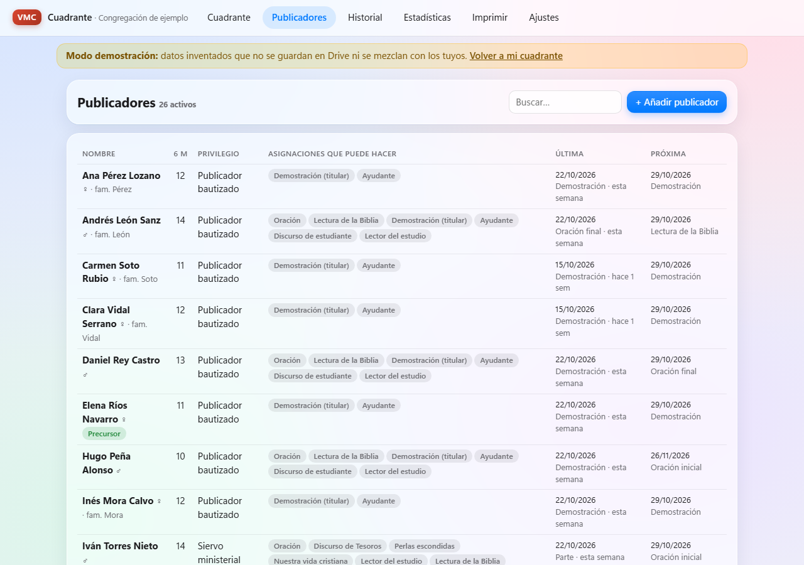
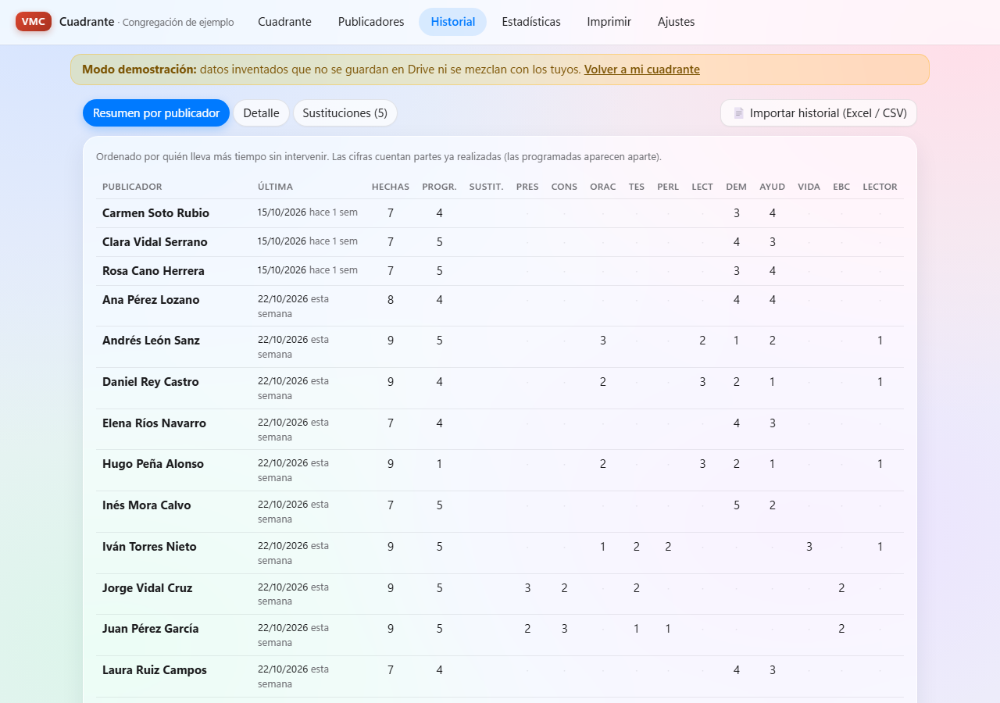
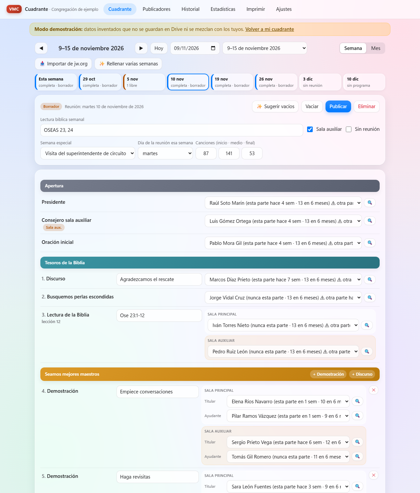
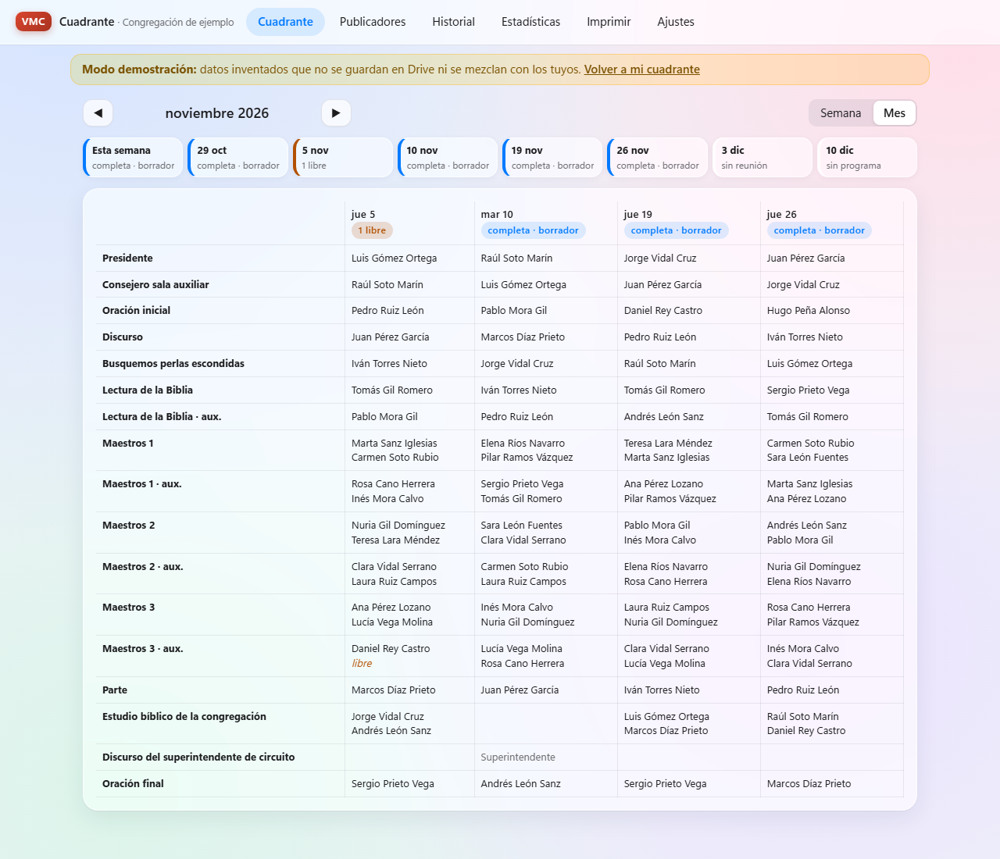
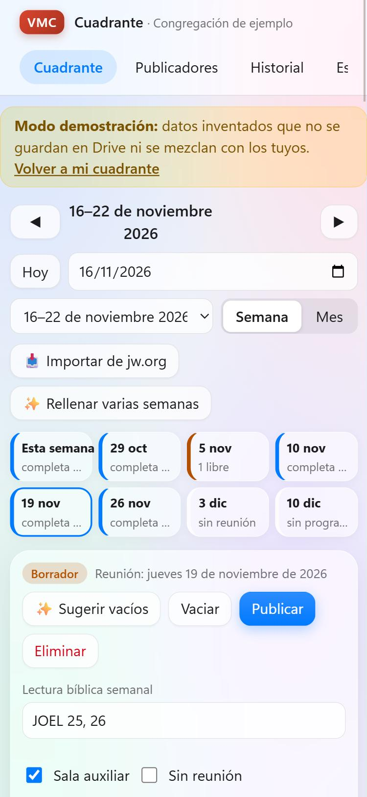
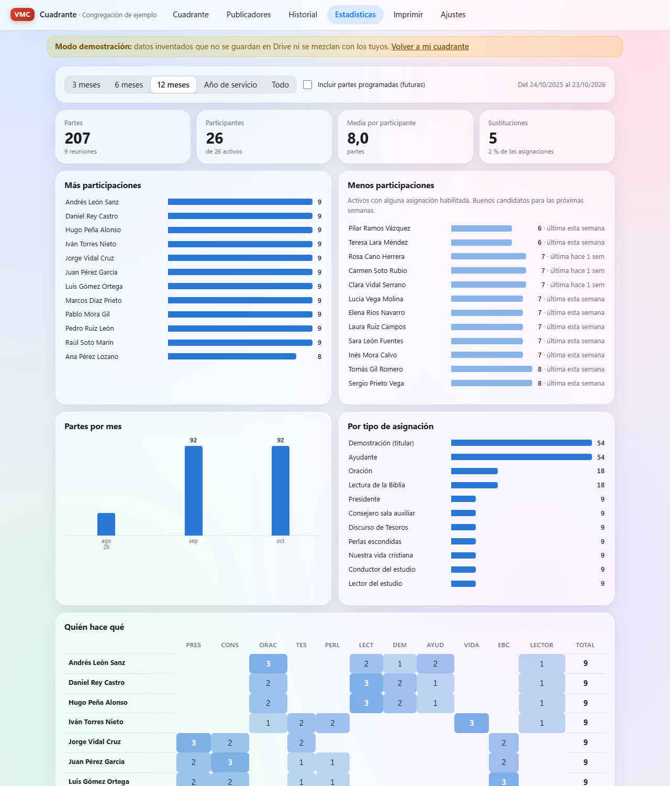
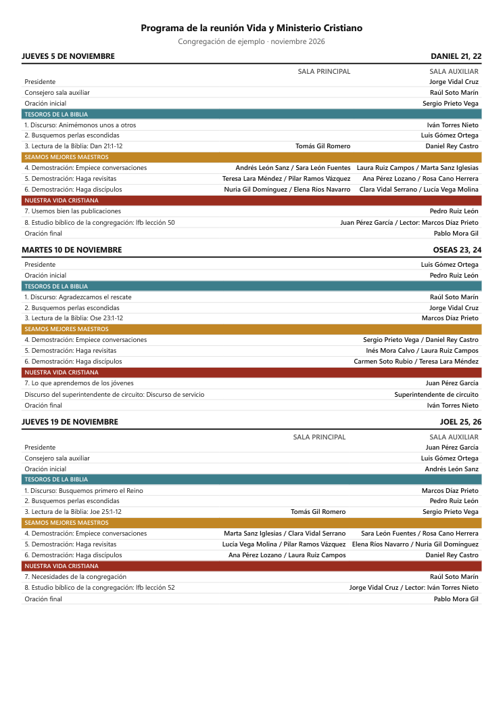
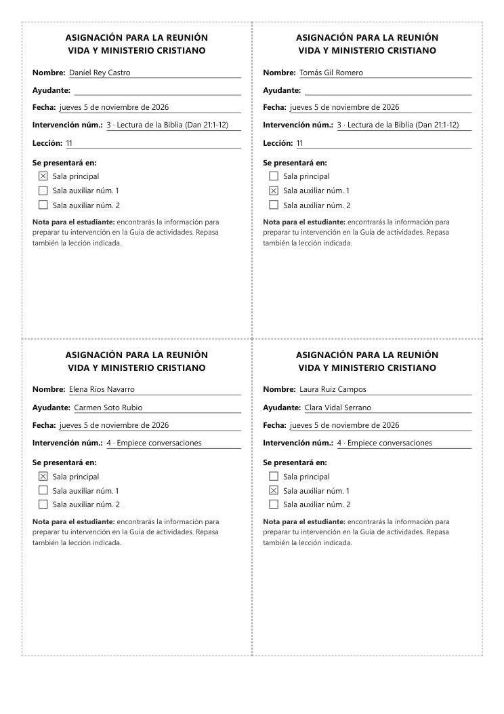
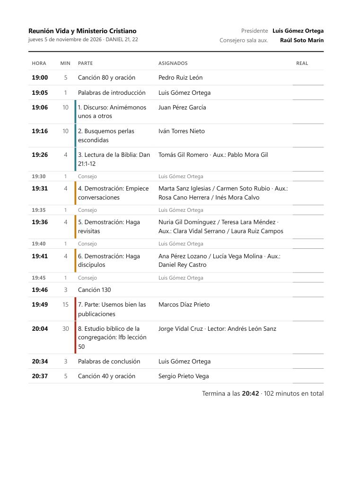

El cuadrante de Vida y Ministerio, de principio a fin
Esta guía recorre la app con una congregación inventada. Las capturas y los PDF son exactamente lo que verás tú. Puedes abrir la misma demostración y tocarlo todo: no se mezcla con tus datos.
1Publicadores
Cada publicador tiene su ficha. Esta información es la que usan las sugerencias:
- Privilegio (anciano, siervo ministerial, publicador bautizado o no bautizado) y sexo.
- Asignaciones que puede hacer: un botón marca las típicas de su privilegio y luego se ajustan a mano.
- Solo ayudante, sala preferida y semanas mínimas entre partes.
- Familia: permite emparejar a un hermano y una hermana de la misma familia.
- Ausencias con fechas, teléfono para WhatsApp y notas.
La lista muestra cuántas partes tuvo cada uno en los últimos 6 meses, cuál fue la última y cuál es la próxima.

2Historial anterior (Excel)
Si ya llevabais las asignaciones en Excel, impórtalas en Historial → 📄 Importar historial o en Ajustes. Así las sugerencias saben desde el primer día quién hizo qué y cuándo.
- Acepta .xlsx y .csv (el .xls antiguo hay que guardarlo antes como .xlsx).
- Reconoce las columnas automáticamente; puedes corregir cualquiera antes de importar.
- Los nombres se buscan en la lista de publicadores, también escritos como «Apellidos, Nombre». Los que no aparecen se pueden crear con un clic.
- Si importas dos veces el mismo archivo no se duplica nada.

3Programa de la semana
En Cuadrante → 📥 Importar de jw.org eliges la Guía de actividades y pulsas «Descargar EPUB». Después cargas ese archivo en la misma ventana. La app crea las semanas con todas las partes: número, título, minutos, lección, lectura semanal y canciones. Si una semana ya existía, conserva a las personas que tenía asignadas.
La sala auxiliar se activa o se quita en cada semana. Sus partes se editan junto a las de la sala principal.
4Asignar con sugerencias
Cada puesto tiene un desplegable que muestra primero a los sugeridos, con lo que conviene saber: «esta parte hace 7 semanas · 13 en 6 meses».
Primero quedan fuera:
- quienes no están habilitados para esa parte;
- quienes están ausentes;
- quienes ya tienen parte esa semana;
- los ayudantes de distinto sexo que no son de la misma familia.
Después se ordena a los demás:
- va primero quien lleva más tiempo sin esa parte y sin intervenir;
- baja quien tiene más carga en los últimos 6 meses, una parte demasiado cerca, una pareja repetida o no prefiere esa sala.
🔍 abre la lista completa de candidatos y explica el porqué de cada uno. ✨ Sugerir vacíos rellena la semana empezando por los puestos más difíciles de cubrir. Rellenar varias semanas reparte hasta 12 semanas de golpe.
Si algo no cuadra (alguien ausente, repetido o no habilitado), la semana lo avisa en rojo.



5Publicar, avisar y sustituir
- Publicar bloquea la semana. A partir de ahí, cambiar a alguien se hace con Sustituir: pide quién entra y el motivo, y queda registrado. El original consta como «sustituido» y no cuenta como parte hecha.
- Avisos: cada asignado tiene un botón de WhatsApp con el mensaje ya escrito, otro para copiarlo y otro 📅 para darle sus fechas en un archivo de calendario. La app marca quién está avisado.
- Calendario: en Imprimir, «📅 Calendario del mes» descarga todas las asignaciones para Google Calendar, Outlook o el iPhone, con recordatorio el día antes y dos horas antes.
- Google Drive: con la cuenta conectada, todo se guarda solo. Si cambias algo en el móvil, el ordenador lo recoge al volver a la app.
- Deshacer (botón o Ctrl+Z) recupera el último cambio.
6Estadísticas
Por periodo (3, 6 o 12 meses, año de servicio o todo):
- Quién participa más y quién menos (estos son buenos candidatos para las próximas semanas).
- Partes por mes y por tipo de asignación.
- Mapa de quién hace qué.
- Reparto entre sala principal y auxiliar.
- Parejas más repetidas.
- Sustituciones: por qué motivo, a quién se sustituyó y quién cubrió más.
Al pasar el ratón por una barra se ve su detalle; un clic sobre una persona abre su historial.

7Lo que se imprime (PDF)
En Imprimir eliges el mes (y, si quieres, una semana) y pulsas «🖨 Imprimir / Guardar PDF». El navegador permite guardarlo como PDF para enviarlo. Así salen los tres formatos, con los datos de la demostración:

Programa del mes Tres semanas por folio. Si hay sala auxiliar, sale en dos columnas. Con los colores de cada sección y la lectura semanal. Abrir PDF de ejemplo
Hojas de asignación (S-89) Cuatro por folio, listas para recortar. Llevan nombre, ayudante, fecha, intervención, lección y la sala marcada. Abrir PDF de ejemplo
Hoja del presidente Hora de comienzo de cada momento (canciones, consejo incluido), minutos, asignados y una columna para apuntar la hora real. Abrir PDF de ejemploFormato del Excel para importar el historial
No hace falta adaptar tu Excel: sirven estos dos formatos, y la app deja elegir qué es cada columna. Basta con que haya una fila de encabezados (no tiene que ser la primera) y una fecha por fila.
Opción A · Cuadrante: una fila por semana
| Fecha | Presidente | Oración | Tesoros | Perlas | Lectura | Lectura aux | Maestros 1 | Ayudante 1 | Maestros 2 | Discurso | Vida cristiana | Conductor EBC | Lector | Oración final |
|---|---|---|---|---|---|---|---|---|---|---|---|---|---|---|
| 07/05/2026 | Juan Pérez | Pablo Mora | Luis Gómez | Pedro Ruiz | Tomás Gil | Daniel Rey | Ana Pérez | Marta Sanz | Lucía Vega / Rosa Cano | Sergio Prieto | Raúl Soto | Jorge Vidal | Andrés León | Marcos Díaz |
Una celda puede llevar titular y ayudante juntos («Lucía Vega / Rosa Cano»). «aux», «sala B» o «sala 2» en el encabezado indican la sala auxiliar.
Opción B · Lista: una fila por asignación
| Fecha | Publicador | Parte | Ayudante | Sala | Título (opcional) |
|---|---|---|---|---|---|
| 04/06/2026 | Pérez García, Juan | Presidente | |||
| 04/06/2026 | Lucía Vega | Empiece conversaciones | Rosa Cano | Auxiliar | |
| 04/06/2026 | Tomás Gil | Lectura de la Biblia | Principal | Jer 52:6-20 |
Este es también el formato del botón «⬇ CSV» de la pestaña Historial, así que una exportación se puede volver a importar.
Opción C · Además, una hoja con la lista de hermanos
Si el archivo trae una hoja con Nombre y Sexo (y columnas como Presidente, Oración, Tesoros, Perlas, Estudiantiles, Conductor estudio, Familia… marcadas con «Sí»), la app ofrece crear a todos los hermanos con lo que puede hacer cada uno antes de importar el historial. Si no indica el privilegio, lo deduce y lo deja anotado para revisarlo.
También reconoce una columna Rol (Estudiante, Ayudante, Presidente…) junto a «Parte / tema», una columna Evento para marcar la visita del superintendente y la Lectura semanal. Si todas las fechas son del mismo día de la semana, propone ajustar el día de la reunión.
Qué entiende en cada parte
- Fechas: celdas de fecha de Excel, «07/05/2026», «2026-05-07» o «7 de mayo de 2026». Sirve cualquier día de la semana de la reunión.
- Partes: presidente, oración (inicial y final), tesoros/discurso, perlas, lectura, demostraciones («empiece conversaciones», «revisitas», «discípulos», «creencias», «maestros»), discurso de estudiante, vida cristiana, estudio/conductor, lector, ayudante y consejero de la sala auxiliar.
- Nombres: se buscan sin importar tildes ni mayúsculas, también como «Apellidos, Nombre» o con un apellido menos.